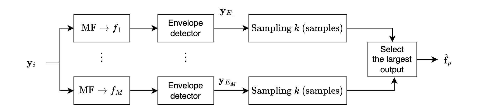

Frequency Estimation in AWGN#
In both digital communications and radar, frequency estimation is encountered.
In radar, the frequency or Doppler shift is one of the primary parameters of interest.
In digital communications, in addition to Doppler shifts, frequency shift keying, where one of a set of \( M \) frequencies must be selected at the receiver in the presence of noise, may be used.
In the digital communications case, detection and estimation reduce to the same problem.
Signal Modelling#
Assume that the amplitude and time of arrival are known so that the signal can be represented by:
where
\( \theta \) is uniformly distributed in the interval \( (0, 2\pi) \)
\( n_i \) represents white Gaussian noise
\( f \) is the unknown frequency to be estimated.
This frequency can be either an unknown constant \( f \) or a random variable \( f \).
Conditional Probabilites#
The probability density function (pdf) of the received signal is then given in the case of non-coherent amplitude estimation, i.e.,
where \( \beta = 2\pi f_0 T_s \) is a constant.
Averaging over the phase distribution yields the pdf as given before, i.e.,
although the pdf of the signal in this case is conditioned on frequency, i.e.,
where
From this, we can see that estimating \( f \) is equivalent to estimating \( \beta \).
ML Estimation#
The maximum-likelihood estimate of \( f \) is computed by finding the frequency that maximizes \( p(\vec{y}|f) \).
Since the Bessel function monotonically increases with its argument, an equivalent problem is to find the frequency \( f \) that maximizes the envelope \( y_E \).
The equivalence in the two cases is most easily observed in the high-SNR case, where the ML estimate of \( \beta \) is obtained from:
For high signal-to-noise ratio, the ratio of the Bessel functions is unity.
Unfortunately, an explicit expression for the frequency estimate is analytically intractable. Nonetheless, structures can still be developed that accomplish the estimate objective.
Example#
In this example [B2, Ex. 11.8], we consider the case of \( M \)-ary frequency-shift keying (FSK), where \( M \) equiprobable signals with frequency \( f_1, \dots, f_M \) are transmitted.
The structure used to estimate the frequency \( \hat{f}_p \) is shown in Figure 11.14.
The envelope outputs, \( y_{E_1}, \dots, y_{E_M} \), are determined by using a bank of filters matched to the signals \( a \sin(2\pi f_\ell i T_s) \) for \( \ell = 1, \dots, M \), followed by envelope detectors.
Equivalently, noncoherent correlators could be used in conjunction with the computation of the envelope, as in the dectection using multiple samples.
The frequency \( \hat{f}_p \) associated with the largest envelope output \( y_{E_p} \) is selected after \( k \) samples are received.
Thus, this structure performs frequency estimation and signal detection.

The frequency-estimator structure can be generalized by allowing the signal amplitude to be time-varying, thereby allowing modulated signals to be represented.
See more: Doppler Estimation
Cramér-Rao bound#
A Cramér-Rao bound can be computed that is analogous to the bound obtained in the time-delay estimation case.
A continuous representation of the received signal which is generalized to the time-varying amplitude case, i.e.,
where
Using CRB’s definition, the Cramér-Rao bound for the minimum variance of the angular frequency \( \hat{\beta} \) can be written as
where \( s(t, \beta) = a(t) \sin(\beta t + \theta) \).
Ignoring the double frequency term, this equation can be expressed as
Since the signal energy \( \mathcal{E} \) is given by
\(\sigma_{\text{min}}^2(\hat{\beta})\) can be rewritten as
where \( \delta_d \) is known as the effective time duration and is given by
Discussions#
The estimation of the angular frequency \( \hat{\beta} \) is the analogous representation for the minimum variance of the delay estimation.
Once again, the result can be extended to narrowband signals.
Increasing the effective bandwidth improves the quality of the delay estimate but reduces the effective time duration, leading to a decrease in the quality of the frequency estimate.
This section considers the case of frequency estimation when the input noise distribution is assumed to be WGN and the signal contains a single frequency.
For many spectral estimation problems, the distribution of the noise is unknown and has prompted researchers to develop alternative methods.